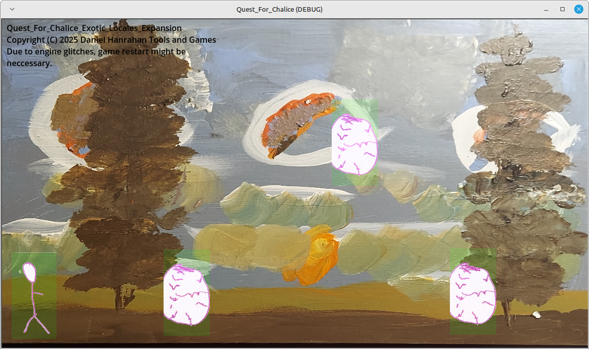
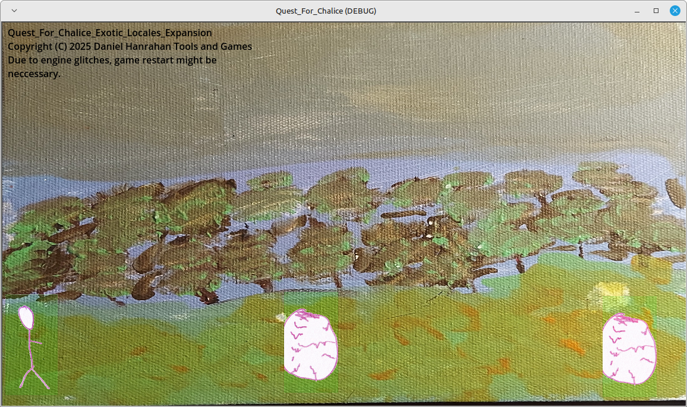
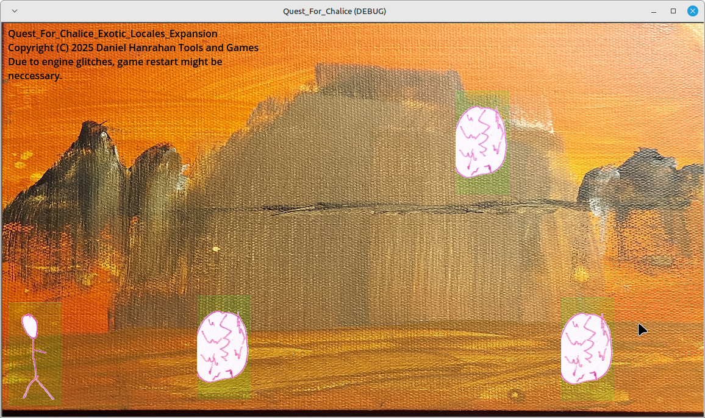

Exotic locales paid expansion
This page is under the GNU GPL v3.0 and everything on this page that the GNU GPL v3.0 does not cover is under this license: This work is licensed under Attribution-ShareAlike 4.0 International.
The expansion shown here is not open source nor anything in it is under any kind of open license, but it is source available.
Link to main page and repository
Not available for compacted version.



If you would like this expansion or have this expansion in your own game streaming service, please attempt to contact me here and we will negotiate the transaction for a copy of this expansion or the transactions for having the expansion on your game streaming service, the contract to put this expansion on your streaming service must have an enshittification clause with no non-disclosures or exclusivity parts of any kind tied to the enshittification clause and it would be about you, me, customers and the last 2 things employees and shareholders/members if need be, the reason we have to negotiate the transactions for the expansion is because of what happened to Valve the owners of the Steam store and Itch.io, why the enshittification clause is neccessary, look what happened to Netflix, Nintendo and Adobe, their services have been terrible lately, plus I see how inflation is affecting everyone terribly. The cost of this expansion is the equivelent of $1.00/U.S. Dollar on October 5th of 2025.
These sources are here for reporting reasons:
What happened to Valve and Itch.io
What happened with Netflix, Nintendo and Adobe